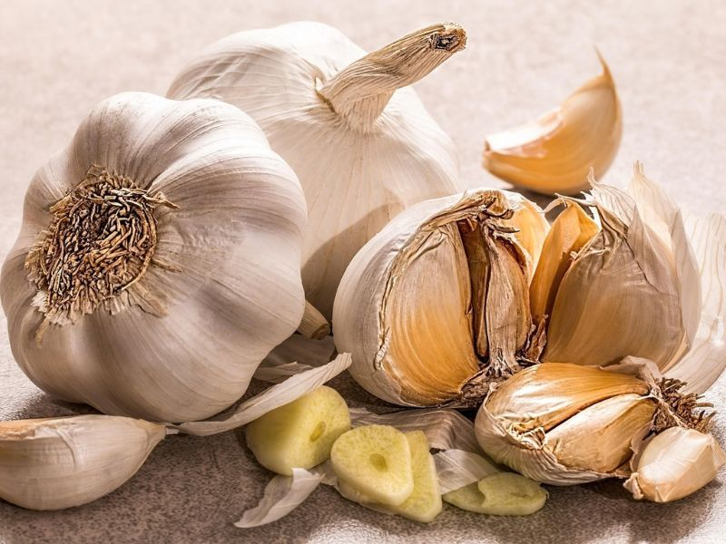

Constituents
Garlic contains sulfur‑rich compounds such as allicin, along with flavonoids, saponins, and essential oils. These constituents contribute to its strong aroma and its long‑standing role in traditional herbal practices.
Actions
Traditionally, Garlic has been valued for its warming, stimulating, and cleansing qualities. It has been used to support microbial balance, promote general vitality, and maintain healthy circulation.
Traditional uses
Garlic has been used for thousands of years across Europe, Asia, and the Middle East. It was commonly included in food and herbal preparations to support resilience, digestive warmth, and overall well‑being. Many cultures regarded it as a protective and strengthening plant.
Current uses & research
Today, Garlic remains popular in herbal practice for general circulatory wellness, seasonal support, and everyday vitality. Research continues to explore its sulfur compounds and their potential roles in supporting normal physiological functions.
Key preparations
- Fresh garlic: Used traditionally in food and herbal preparations.
- Garlic oil: Made by macerating garlic in oil.
- Capsules / tablets: Common modern supplement forms.
Practical self-help uses
Garlic is often included in traditional blends for seasonal wellness, digestive warmth, and general vitality. These uses reflect long‑standing herbal traditions rather than medical treatment.
This profile is an original summary based on general herbal knowledge. It is not a copy of any specific book or source. The information is for educational purposes only and is not a substitute for professional medical advice, diagnosis, or treatment.